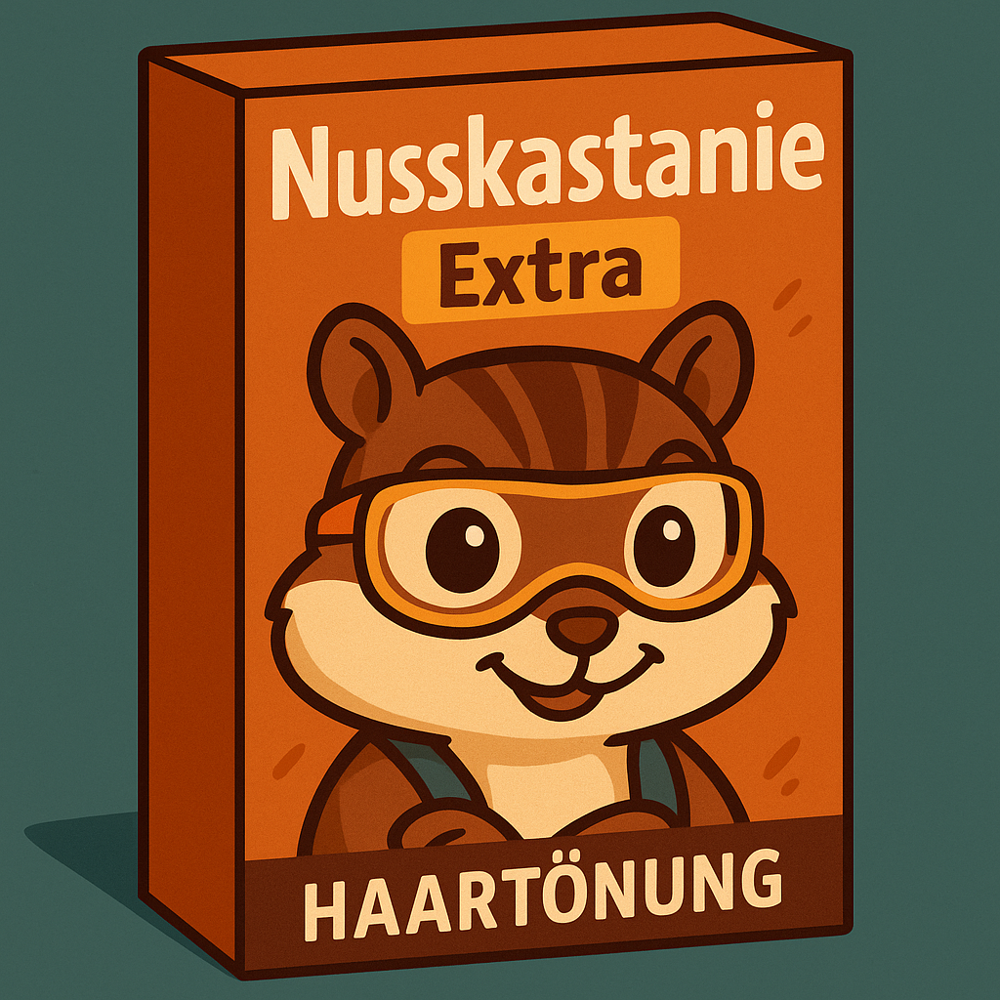
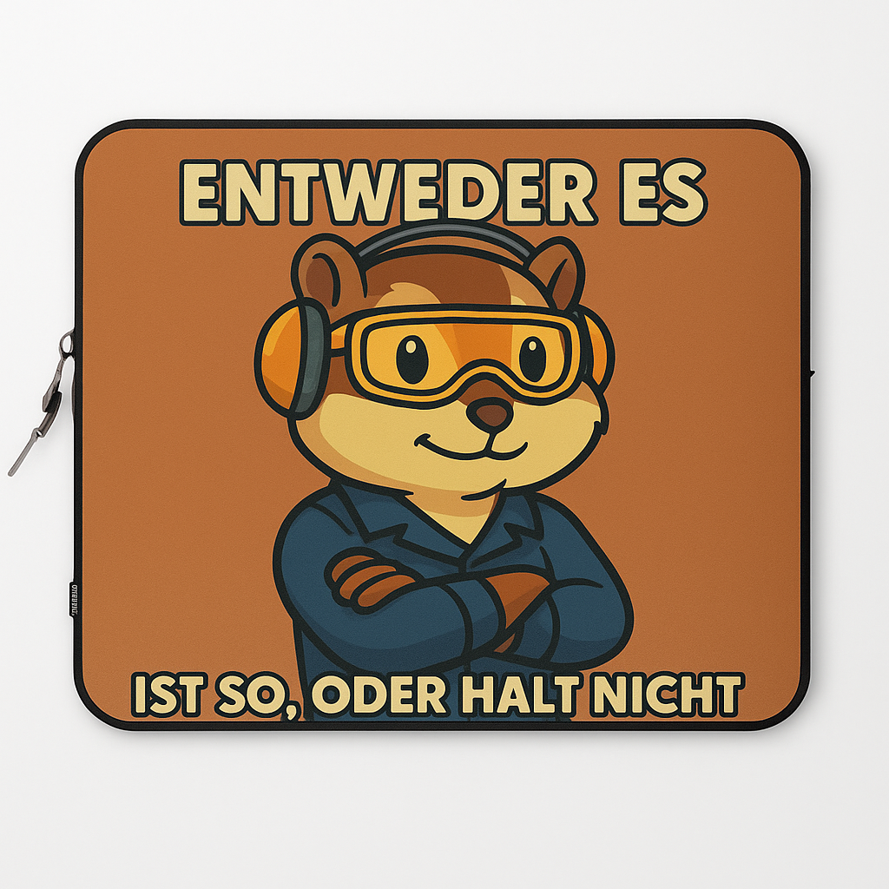
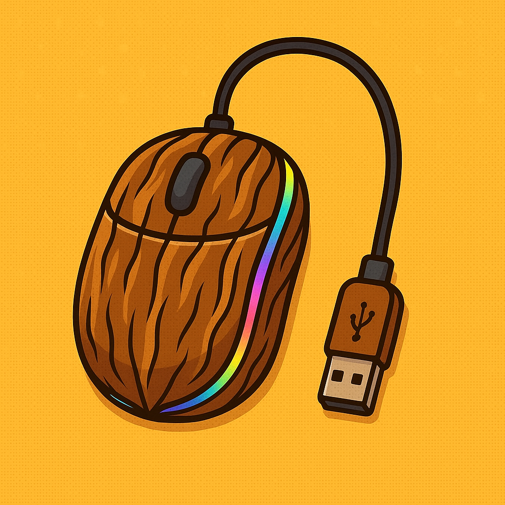

Fiksstellung
Fiks begann seine Karriere nicht mit Holz, sondern mit Stahl. Als Dreher in der Industriehalle wurde schnell klar: Dieser Nager hat das Zeug zum Vorarbeiter. Heute überwacht er Maschinen mit einem Blick, der tiefer schneidet als jedes Gewinde.
- 2008 – Erste Späne in der Lehre bei NAGEMA
- 2012 – CNC-Dreher mit Hang zur Genauigkeit
- 2016 – Vorarbeiter in der Präzisionsdreherei
- 2023 – Ehrenurkunde: „Fiks – Dreher des Vertrauens“
Fikse Fakten
- Präzision: ±0,01 mm (bei Windstille)
- Stammplatz am Drehstuhl: Unverrückbar
- Lieblingsmaterial: Messing
- Schichtbeginn? Mit dem ersten Nussknacken
Fiksnorm – Der Werks-Kodex
- §1: Wer spannt, muss auch drehen.
- §2: Die Maschine hat recht – außer Fiks sagt was anderes.
- §3: Späne wegfegen ist Chefsache. Also seine.
Zitate von Fiks
- „Entweder es ist so, oder halt nicht.“
- „Eine Frage.“
- „Ich war Vorarbeiter.“
- „Mein Akku ist leer.“
Fiks' Werkstatt-Shop (leider alles ausverkauft)

Streifenhörnchen-Haartönung „Nusskastanie Extra“
Für den natürlichen Werkstatt-Look. Lässt dich sofort nach CNC-Nager aussehen.
Ausverkauft

„Ich war Vorarbeiter“-Tasse
Fassungsvermögen: exakt 437 ml – wie vorgeschrieben.
Ausverkauft

CNC-Mauspad mit Späne-Textureffekt
Ergonomisch, krümelfest, voller Würde.
Ausverkauft

Kabelgebundene RGB-Nuss-Maus
Die einzige Maus mit knackigem Finish und leuchtender Aura. Natürlich mit USB-A-Anschluss.
Ausverkauft
Streifenhörnchen-Taschenrechner
Sieht gut aus. Tut nichts Nützliches. Aber hey – Design überzeugt.
Ausverkauft